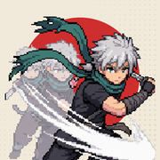

Final Chapter: Ink Survivors
终章 Final Chapter
Support
Need help, found a bug, or have an idea? Email tjwangbusiness@gmail.com. Please include your device model, iOS version and what happened — a screenshot helps a lot.
FAQ
Where is my progress saved? Only on your device. There is no account and no cloud save, so deleting the app also deletes your progress.
Does the game have ads or in-app purchases? No.
Does it work offline? Yes, the whole game plays offline.
How do I change the language? Tap the language button at the top right of the home screen (English, 中文, Español).
支持
遇到问题、发现 bug，或者有建议？请发邮件到 tjwangbusiness@gmail.com，写上手机型号、iOS 版本和发生了什么，附上截图会更好。
常见问题
进度存在哪里？只存在你的设备上。没有账号，也没有云存档，删除 App 会同时删除进度。
有广告或内购吗？没有。
能离线玩吗？可以，整个游戏都能离线玩。
怎么切换语言？点首页右上角的语言按钮（English、中文、Español）。
Soporte
¿Necesitas ayuda, encontraste un error o tienes una idea? Escribe a tjwangbusiness@gmail.com. Indica el modelo de tu dispositivo, la versión de iOS y qué pasó; una captura de pantalla ayuda mucho.
Preguntas frecuentes
¿Dónde se guarda mi progreso? Solo en tu dispositivo. No hay cuenta ni guardado en la nube, así que al borrar la app también se borra tu progreso.
¿Tiene anuncios o compras dentro de la app? No.
¿Funciona sin conexión? Sí, todo el juego funciona sin conexión.
¿Cómo cambio el idioma? Toca el botón de idioma arriba a la derecha de la pantalla principal (English, 中文, Español).